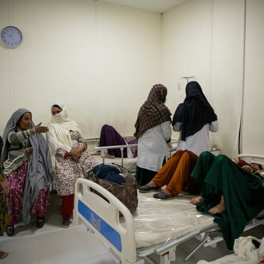
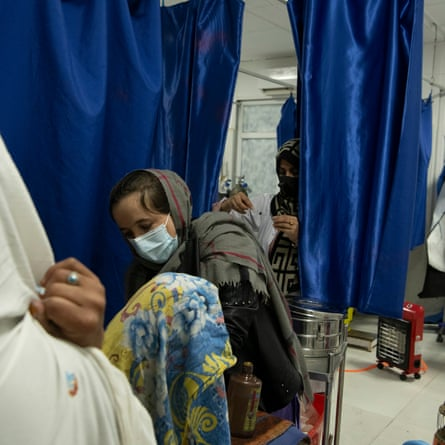
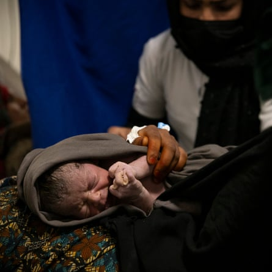

I t was the middle of the night when Zarin Gul realised that her daughter Nasrin had to get to the hospital as soon as possible. Her daughter’s husband was away working in Iran and the two women were alone with Nasrin’s seven children when Nasrin, heavily pregnant with her eighth child, began experiencing severe pains.
Gul helped Nasrin into a rickshaw and they set off into the night. Holding her daughter’s hand as the rickshaw jolted over the dirt road, Gul says she prayed they would not encounter a Taliban checkpoint.
“I kept thinking, if only Nasrin’s husband were here. If only I could ease my daughter’s pain,” she says. Her prayers were not answered. The rickshaw’s small lamp was spotted by Taliban fighters who signalled for them to stop and demanded to know where they were going.
As a frightened Gul explained that her daughter was sick and needed urgent medical attention, they asked why the women were travelling without a male escort , or mahram . Even though Gul explained that Nasrin’s husband was working abroad, the fighters refused to allow them to pass and continue their journey to the hospital.
“I begged them, telling them my daughter was dying. I pleaded for their permission,” says Gul. “But they still refused. In desperation, I lied and said the rickshaw driver was my nephew and our guardian. Only then did they let us pass.”
By the time they reached the hospital it was too late. Nasrin’s baby had already died in her womb, and her uterus had ruptured. The doctors said Nasrin needed to be transferred to another hospital and so Gul helped her daughter into another rickshaw and they set off again, towards a government hospital an hour away. On their way they were stopped at two more Taliban checkpoints, each time detained for long periods because they were travelling alone.
They did finally reach the hospital, but Nasrin had not survived the journey. “The doctors told us that due to excessive bleeding and the ruptured uterus, both the baby and the mother had died,” says Gul. “We buried them side by side.”
The Guardian and Zan Times , an Afghan news agency, has interviewed dozens of women and healthcare professionals across multiple Afghan provinces. Their testimonies build a picture of a maternal and child healthcare system dangerously compromised and eroded by the Taliban’s draconian policies towards women .
An overcrowded maternity ward at the Zabul provincial hospital in the city of Qalat, in southern Afghanistan.Photograph: Kiana Hayeri/Kiana Hayeri for Carmignac Foundation
Their refusal to let women travel to hospitals unaccompanied, combined with increasing rates of early marriage, poor access to healthcare, unsafe roads and a cultural neglect of women’s health will inevitably contribute to increased maternal deaths in Afghanistan , according to UN agencies.
Even before the Taliban took power, Afghanistan had a maternal mortality rate three times higher than the global average, according to the last official World Bank figures from 2020.
Experts warn that maternal health is likely to deteriorate further, compounded by the Taliban’s decision in December 2024 to close all medical training to women, including prospective midwives .
According to a report by the World Health Organization (WHO), 24 mothers and 167 infants already die every day in Afghanistan from preventable causes. It is estimated that more than 20,000 villages across the country lack basic healthcare services, affecting 14 million people.
A recent UN Women report estimated that by 2026, a woman’s chance of dying in childbirth will have increased by 50%.
This 22-year-old midwife has helped deliver nine babies during her 13-hour shift at the Zabul provincial hospital in the city of Qalat, in southern Afghanistan.Photograph: Kiana Hayeri/Kiana Hayeri for Carmignac Foundation
Hospital staff in provinces across Afghanistan have reported that women have been persistently prevented from accessing maternal healthcare because they were not accompanied by a man.
A medical professional at Mirwais regional hospital in Kandahar says the hospital receives female patients from across Kandahar but also from neighbouring provinces.
“Most arrive in critical condition and some die simply because they were brought in too late,” they say. “Some babies die in the womb, while others pass away within minutes of birth.” According to staff, the hospital recorded at least 800 maternal deaths and more than 1,000 newborn deaths last year.
“A young woman arrived at the hospital after giving birth in a taxi,” says Samina, a midwife working in a government hospital in Kandahar. “Her baby had died on the way due to a lack of oxygen. When I asked her why she hadn’t come to the hospital sooner, she replied, ‘I had to wait for my husband to return from work. I had no other male guardian.’”
Two women told the Guardian they had experienced miscarriage due to inability to access care. One interviewee reported the death of a family member during labour.
“My sister died yesterday during childbirth,” says 35-year-old Pashtana* from Kandahar province. “Her husband was not at home when she went into labour, and she could not go to the doctor alone.”
Pashtana said if her sister had travelled to the clinic alone, “she would not be treated because she did not have a mahram ”.
Several women told the Guardian that they were denied treatment and prescriptions in the absence of a male guardian or because they lacked the permission of one.
“I don’t get to see the doctors or get medicines unless I am accompanied by my son or grandson,” says Qandi Gul*, a 50-year-old woman who had travelled to a clinic for an eye exam.
A female doctor from the eastern province of Nangarhar says: “Since the Taliban takeover, women don’t visit the doctor unless the sickness develops to the point of being unbearable.
A midwife holds a baby girl at Zabul provincial hospital. She is one of eight midwives at the hospital, which also has two female doctors and one senior female doctor. They were trained before the recent Taliban ban on women attending nursing and midwifery courses.Photograph: Kiana Hayeri/Kiana Hayeri for Carmignac Foundation
“One reason is because of financial hardships, but sometimes the reason is because the men of the families are careless and do not bring the woman to the doctor sooner. And since they can’t travel on their own, their condition worsens,” she says.
Already, a growing shortage of qualified medical professionals and midwives is putting the lives of women and children at serious risk, particularly in rural areas where few trained doctors are available.
Doctors interviewed by the Guardian estimated that “more than half” of their female colleagues had quit their jobs, particularly in smaller cities and villages.
“Most of my colleagues have left Afghanistan and this has severely affected the healthcare sector in the country,” said Dr Sima*, who chose to stay along with her husband, also a doctor. “We are both specialists, and we realised we would not be able to do this work abroad so we stayed to serve the country.”
A midwife from Takhar province says officials from the Taliban’s ministry for the propagation of virtue and prevention of vice constantly harass and humiliate female medical staff. “We try our best to do our jobs, but the pressure is unbearable. Many of us just want to quit. Sometimes, they insult us, claiming our clothing is ‘un-Islamic’.
“One day, our emergency ward was overwhelmed with patients. That section is for women only, and men are not allowed. But Taliban enforcers barged in and took away three female nurses, claiming their uniforms were inappropriate. They made them sign a pledge to wear longer clothing before letting them go. Even in life and death emergencies, instead of letting us treat patients they are instead arresting us over our clothing.”
- Names have been changed to protect the identity of the interviewees and some of the writers. A version of this story was originally published by Zan Times